Typeform to OpenAI Lead Scoring with Make.com (Auto-Qualify Leads)
A new lead fills out your Typeform inquiry form. It sits in a spreadsheet alongside every other submission — the $10K website redesign right next to the "just checking prices" tire-kicker. Someone on your team has to read through every response, decide who's worth calling first, and hope they don't bury a hot lead under a pile of cold ones. This Make.com automation eliminates that guessing game. When a lead submits your Typeform, OpenAI reads their request, budget, and timeline, scores them as Hot, Warm, or Cold, logs everything to Google Sheets, and pings your Slack channel when a qualified lead comes in. Four modules, one filter, 30 minutes to build, and your team talks to the right leads first — every time.
Why Manual Lead Scoring Doesn't Scale
Reading every form submission works when you get three leads a week. It breaks when you get three a day. The problem isn't volume alone — it's inconsistency. One person on your team considers a $3K budget "warm." Another calls it "cold." Monday morning leads get reviewed immediately. Friday afternoon leads sit until Monday. The gap between submission and first contact is where deals die. Studies consistently show that response time is the single biggest factor in lead conversion — not your pitch, not your portfolio. Automating the scoring layer means every lead gets evaluated by the same criteria, instantly, regardless of when they submit or who's on your team that day.
How the AI Lead Qualification Automation Works
When someone submits your Client Inquiry Form on Typeform, Make.com catches the response instantly via webhook. The lead's name, company, request description, budget, and timeline flow into an OpenAI module that scores the lead against rules you define. The AI returns a structured verdict — Hot, Warm, or Cold — along with a one-sentence explanation. That score and every form field land in a Google Sheets tracker automatically. If the lead scores Hot or Warm, Slack gets a formatted notification so your team can act immediately. Cold leads are logged silently — no interruption, no noise.
Automation Flow
| Step | What Happens | Tool |
|---|---|---|
| 1 | Lead submits inquiry form | Typeform |
| 2 | Webhook fires instantly | Make.com (INSTANT trigger) |
| 3 | AI analyzes request, budget, timeline | OpenAI (GPT-5-mini or similar cost-efficient model) |
| 4 | Lead data + AI score saved to tracker | Google Sheets |
| 5 | Hot or Warm? Team gets notified | Slack (filtered) |
This is the first tutorial in this series that uses AI inside the automation. The OpenAI module works on Make.com's free plan — it's a standard third-party app integration, not part of Make.com's paid-only AI Tools or AI Agents features. The only additional cost is your OpenAI API usage, which runs fractions of a cent per lead.
You can build this entire automation on Make.com's free plan — no credit card required. Start free on Make.com →
What Makes This Different — AI on Your Automation Layer
Every automation in this series so far has followed a straightforward pattern: an event happens, data moves from A to B, maybe a notification fires. The logic is fixed — if this field equals this value, do that. This scenario adds something new: a module that reads unstructured text and makes a judgment call. The "What do you need help with?" field on your form is a free-text response. A human can read "We need a complete website redesign with CRM integration" and immediately sense that's a serious inquiry. A traditional automation can't — it would need rigid keyword matching that breaks on every unexpected phrasing. OpenAI handles this naturally. You give it scoring rules, it reads the lead's actual words, and it returns a classification. The prompt you write defines what "Hot" means to your business. The AI applies those rules consistently to every lead, 24 hours a day.
What About Cost?
Two costs to consider: Make.com credits and OpenAI API usage. On the Make.com side, each lead consumes exactly 3 credits if scored Hot or Warm (OpenAI 1 + Google Sheets 1 + Slack 1), or 2 credits if Cold (OpenAI 1 + Google Sheets 1, Slack skipped by the filter). The Typeform INSTANT trigger consumes zero credits while waiting. At 100 leads per month with a typical mix, that's roughly 250-280 credits — well within the free plan's 1,000 monthly credit allowance.
On the OpenAI side, GPT-5-mini costs fractions of a cent per lead. Each qualification prompt uses roughly 200-300 input tokens and 50-80 output tokens. At current pricing, that's approximately $0.001-0.003 per lead. Even at 1,000 leads per month, your OpenAI bill stays under $3. The AI layer is effectively free at small business volume.
What You Need Before Starting
You need four things set up before opening Make.com: a Typeform form, an OpenAI API key, a Google Sheet, and a Slack channel.
Typeform Client Inquiry Form
Create a form with six fields: Full Name (short text), Email (email), Company Name (short text), "What do you need help with?" (long text), Budget Range (multiple choice: Under $1K / $1K-$5K / $5K-$10K / $10K+), and Timeline (multiple choice: ASAP / 1-2 weeks / 1 month+ / Just exploring). The long text field is the critical one — it's the unstructured input that OpenAI will analyze. Budget and Timeline give the model structured context to score more accurately.
Build your intake form in minutes with Typeform's drag-and-drop builder. Try Typeform free →
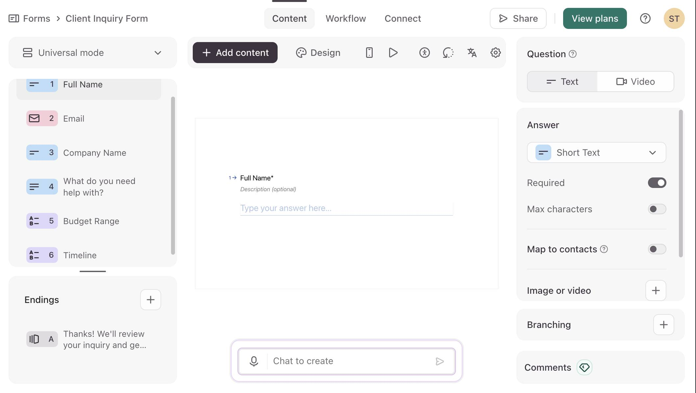
OpenAI API Key
Go to platform.openai.com/api-keys and create a new API key. Name it something recognizable like "Make.com" — you'll paste this key when connecting the OpenAI module. You need credit on your OpenAI account to use the API. Even $5 is enough for thousands of lead qualifications at GPT-5-mini pricing. One thing to be aware of: lead form data (names, companies, project descriptions) will be sent to OpenAI's API for scoring. OpenAI's API data is not used for model training by default, but if you operate under GDPR or handle sensitive client data, make sure your privacy policy reflects that form submissions are processed by a third-party AI service.
Google Sheet — Lead Tracker
Create a Google Sheet called "Lead Tracker AI" with eight columns: Name (A), Email (B), Company (C), Request (D), Budget (E), Timeline (F), AI Score (G), and AI Reason (H). The first six columns store the raw form data. The last two — AI Score and AI Reason — are filled by OpenAI's classification. Add a header row with these labels so Make.com can reference columns by name.
Slack Channel
Create or pick a channel for qualified lead alerts — something like #hot-leads. Only Hot and Warm leads will post here. Cold leads go straight to the spreadsheet without generating noise.
Make.com Free Plan
The OpenAI module is a standard third-party integration — it works on Make.com's free plan just like Google Sheets or Slack. You do not need a paid Make.com plan to build this automation. The free plan gives you 1,000 credits per month and 2 active scenarios, which is enough to run this automation alongside one other. The only external cost is your OpenAI API key, which you set up in the previous step. Don't confuse the OpenAI module with Make.com's built-in "AI Tools" or "AI Agents" features — those are Make.com's own AI capabilities that do require a paid plan. The OpenAI module connects directly to your OpenAI account using your API key.
How to Build the AI Lead Qualification Automation
- Log in to Make.com and create a new scenario. Click the + button on the empty canvas and search for "Typeform." Select Watch Responses — this creates an INSTANT webhook trigger that fires the moment someone submits your form, with zero credit cost while idle. Connect your Typeform account via OAuth when prompted. Select "Client Inquiry Form" (or whatever you named your form) from the Form ID dropdown. Set Enabled to Yes so responses flow to the webhook immediately.
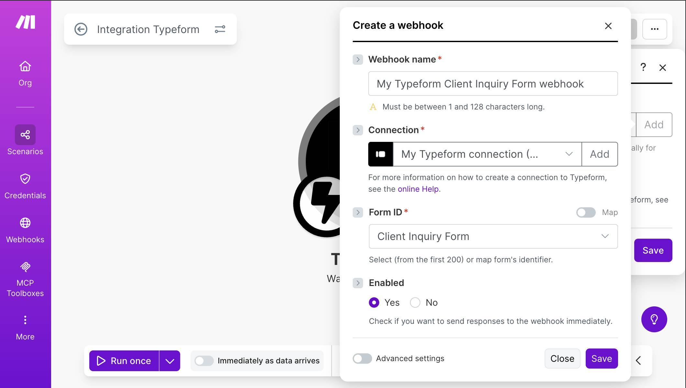
Typeform Watch Responses — webhook name, connection, form selected, Enabled set to Yes - Test the Typeform trigger. Click "Run once" in Make.com, then open your Typeform and submit a test response with realistic data. Use something clearly "Hot" for your first test — a high budget, urgent timeline, and detailed project description. After submitting, Make.com should show a green checkmark on the Typeform module with the captured data. Verify that all six fields (Full Name, Email, Company Name, project description, Budget Range, Timeline) appear in the output bundle.
- Add the OpenAI module. Click the + button next to the Typeform module and search for "OpenAI." Select Generate a Response from the list. This module sends your lead data to OpenAI's API and receives a structured classification back. When prompted, click "Add" to create a new OpenAI connection. Enter your API key in the API Key field. Leave Organization ID blank unless you're on an OpenAI team plan.
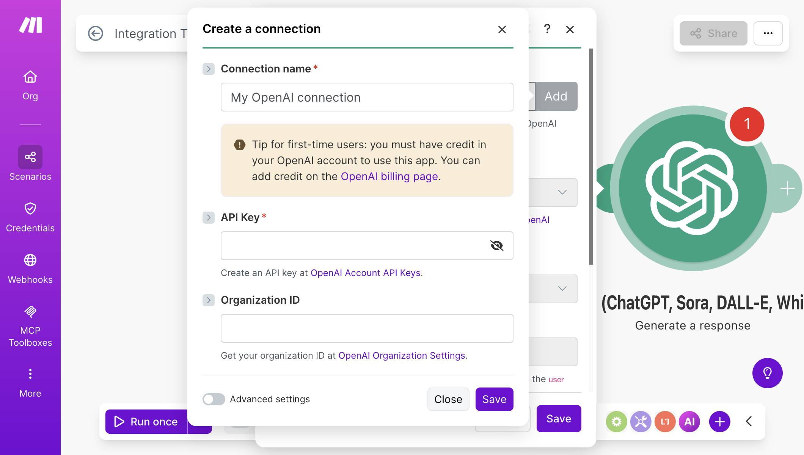
OpenAI connection setup — API Key field with link to OpenAI billing page for first-time users - Configure the OpenAI module — model and prompt. Set the Model to gpt-5-mini (or the most cost-effective model available in the dropdown — look for descriptions mentioning "faster" and "cost-efficient"). Set Prompt Type to "Text prompt." In the Prompt field, type labels and map each Typeform field from the mapping panel. The prompt is the user-level message — it's the data the AI will analyze. Each line labels a field so the model knows what it's reading. You don't need to include the Email field in the prompt because it's irrelevant to scoring — it goes directly to Google Sheets later. The prompt should look like this when complete:
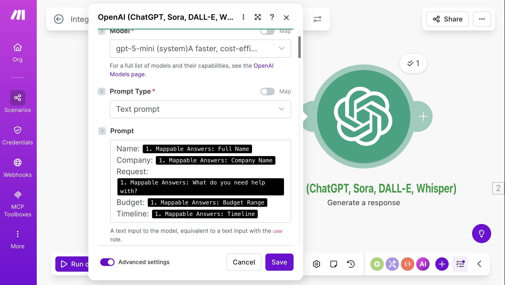
OpenAI Generate a Response — gpt-5-mini selected, Text prompt with mapped Typeform fields for Name, Company, Request, Budget, and Timeline - Scroll down to Advanced settings (toggle it on at the bottom of the module). Find the Instructions field — this is the system-level prompt that tells the AI how to behave. It acts as a system message that runs before the user prompt and shapes every response. Paste the following scoring rules: "You are a lead qualification assistant for a service business. Analyze the lead's request, budget, and timeline, then classify them. Scoring rules: Hot: Budget $5K+, timeline within 2 weeks, clear project scope. Warm: Budget $1K-$5K OR timeline within 1 month, some project clarity. Cold: Budget under $1K, "just exploring", vague or unclear request. When budget and timeline suggest different scores, lean toward the lower score." Notice this prompt doesn't include instructions about JSON formatting — the JSON Schema you'll configure in the next step handles output structure at the API level, so the prompt stays focused on scoring logic.
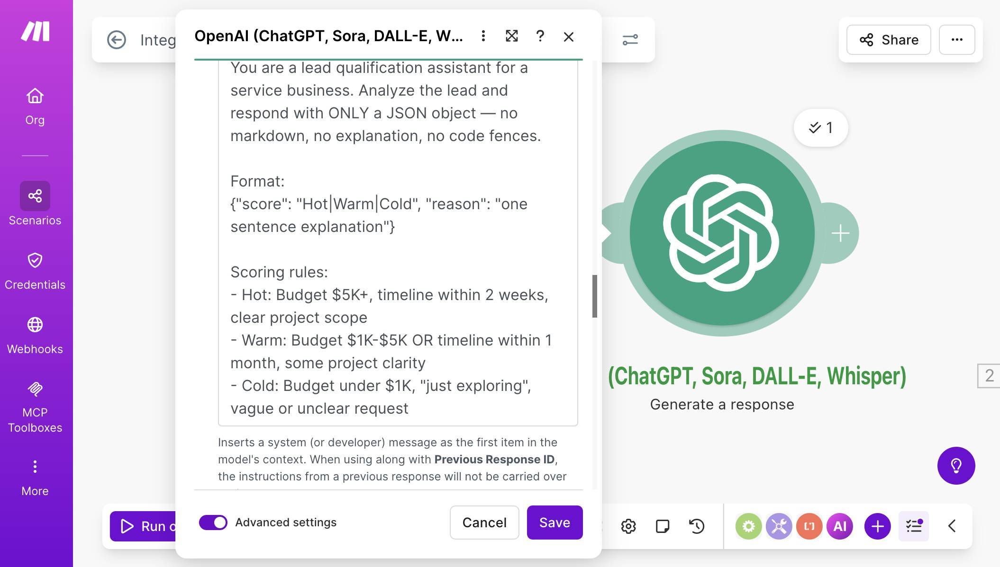
OpenAI Instructions field — system prompt with scoring rules for Hot, Warm, and Cold classifications - 💡 Pro Tip: The scoring rules in the Instructions field are yours to customize. If your business considers $2K+ budgets "Hot," change the thresholds. If "timeline within 1 week" matters more than budget, rewrite the rules. The AI follows whatever criteria you define — it doesn't have opinions about what makes a good lead. Keep the rules specific and mutually exclusive so the model doesn't have to guess which category a borderline lead falls into.
- Still in Advanced settings, scroll to the Output Format section. Set Output Format Type to "JSON Schema." This is what guarantees the AI returns structured data you can map directly in Make.com — no parsing, no regex, no guessing. A Schema Name field appears — enter something like "lead_qualification." Then paste the JSON from the "JSON Schema for Lead Qualification" section below into the Schema field. The screenshot shows the completed schema:
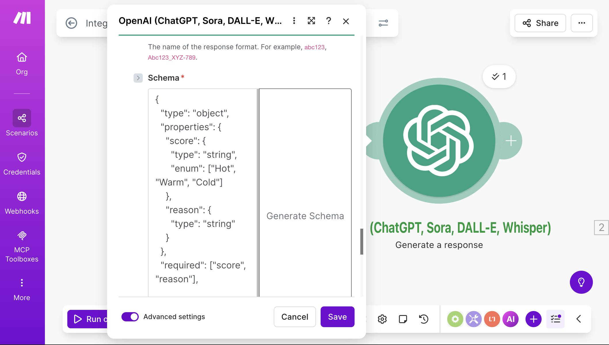
OpenAI Output Format — JSON Schema with score (enum: Hot, Warm, Cold) and reason (string) properties - 💡 Pro Tip: If you've never seen JSON Schema before, think of it as a contract between you and the AI. You're saying: "I expect an object with these exact fields, these exact types, and nothing else." OpenAI's Structured Outputs feature guarantees the response matches your schema — it's not a suggestion the model might ignore, it's a hard constraint enforced at the API level. This is why we don't need to beg the AI with "please only return JSON" in the prompt — the schema handles it.
- Set Temperature to 0.3 and Max Output Tokens to 150. Temperature controls randomness — lower values make the output more consistent and deterministic. For classification tasks where you want the same lead scored the same way every time, 0.3 is ideal. Max Output Tokens caps the response length. Our JSON output is roughly 30-60 tokens, so 150 gives plenty of headroom without risking runaway responses. Save the module.
- Test the OpenAI module. Click "Run once." The Typeform trigger replays the last captured submission, and the OpenAI module processes it. Check the output — you should see "result: score" with a value like "Hot" and "result: reason" with a one-sentence explanation. If the output looks correct, the AI layer is working.
- Add Google Sheets — Add a Row. Click + and search for "Google Sheets." Select Add a Row. Connect your Google account, then select your "Lead Tracker AI" spreadsheet and the "Leads" sheet. Map each column to its source. The first six columns pull from the Typeform module (module 1): Name (A) maps to Full Name, Email (B) to Email, Company (C) to Company Name, Request (D) to "What do you need help with?", Budget (E) to Budget Range, Timeline (F) to Timeline. The last two columns pull from the OpenAI module (module 2): AI Score (G) maps to "result: score" and AI Reason (H) maps to "result: reason."
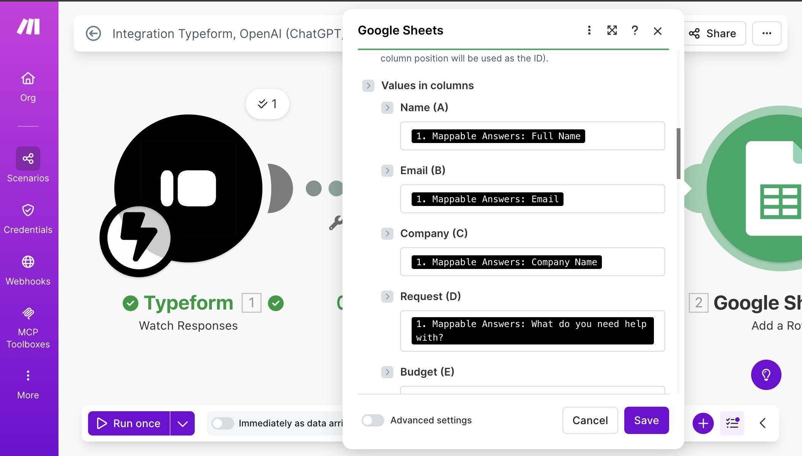
Google Sheets column mapping — Name through Request mapped from Typeform (module 1) 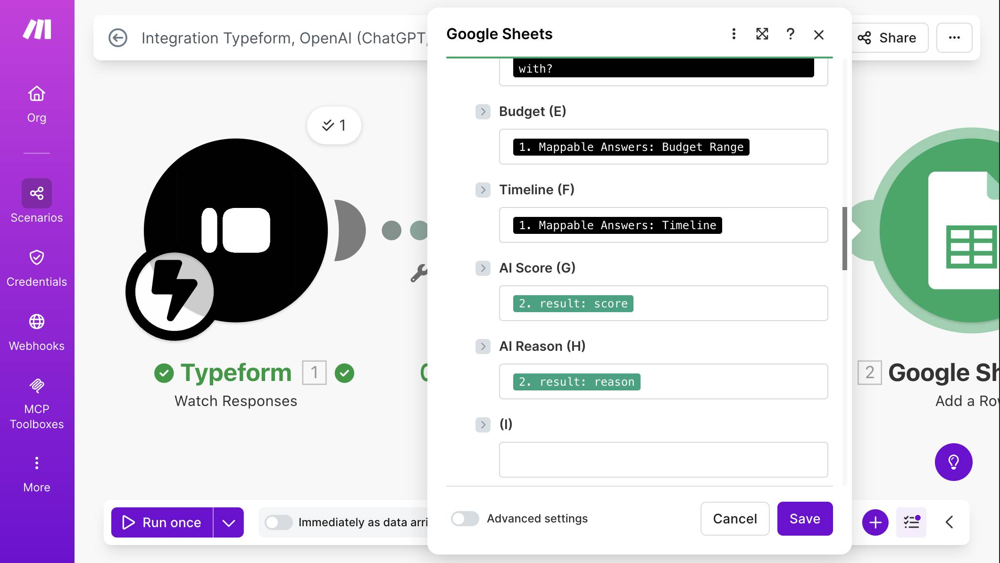
Google Sheets column mapping — Budget, Timeline from Typeform, AI Score and AI Reason from OpenAI (module 2) - Add a filter between Google Sheets and Slack. Click the connection line after the Google Sheets module (or click + and you'll see the option to add a filter on the link). Name the filter "Hot and Warm Leads." Set the first condition: "result: score" (from the OpenAI module) — Text operators: Equal to — "Warm." Click "Add OR rule" to add a second condition: "result: score" — Text operators: Equal to — "Hot." This filter lets only Hot and Warm leads through to Slack. Cold leads stop here — they're already saved in Google Sheets from the previous step.
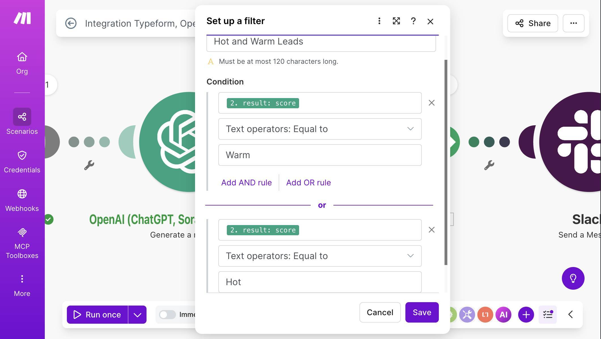
Filter setup — score equals Warm OR score equals Hot - 💡 Pro Tip: Why a filter instead of a Router? In earlier tutorials like the Stripe cancellation automation, we used a Router because different scores needed different actions — one branch sent a win-back email, another logged the cancellation. Here, Cold leads don't need any additional action. They're already in the spreadsheet. A simple filter on the connection line achieves the same result with fewer modules and zero extra credits.
- Add Slack — Send a Message. Click + after the filter and search for "Slack." Select Send a Message. Connect your Slack account, set Channel Type to "Public channel," and select your #hot-leads channel. In the Text field, build a message that gives your team everything they need at a glance. Map the score, name, company, budget, timeline, project description, and AI reason from the Typeform and OpenAI modules.
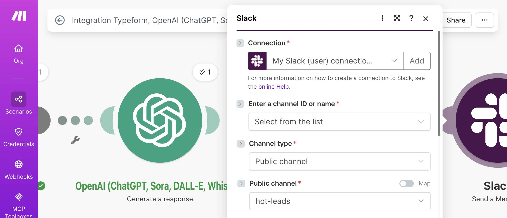
Slack module — connection, channel type, #hot-leads channel selected 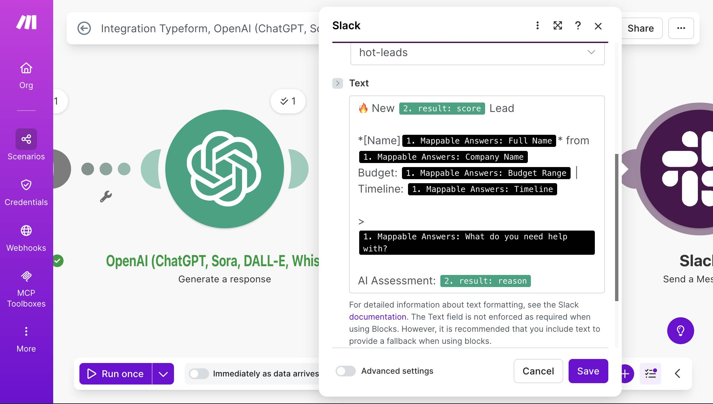
Slack message template — score, name, company, budget, timeline, request, and AI assessment mapped from Typeform and OpenAI modules - Test the complete scenario. Click "Run once" and submit a new Typeform response. If your test lead has a high budget and urgent timeline, all four modules should show green checkmarks, a new row should appear in your Google Sheet with the AI Score and AI Reason columns filled, and a Slack notification should land in #hot-leads. Submit a second test with "Under $1K" budget and "Just exploring" timeline — this lead should appear in the spreadsheet but not trigger a Slack notification.
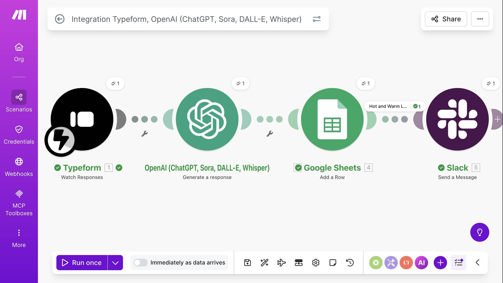
Complete scenario — Typeform, OpenAI, Google Sheets, and Slack modules connected with green checkmarks and "Hot and Warm Leads" filter visible - Verify all three scoring paths. Submit three test leads to cover every classification: one clearly Hot (high budget, urgent timeline, detailed request), one Warm (mid-range budget or moderate timeline), and one Cold (low budget, "just exploring," vague request). Your Google Sheet should show all three with correct AI scores and reasoning.
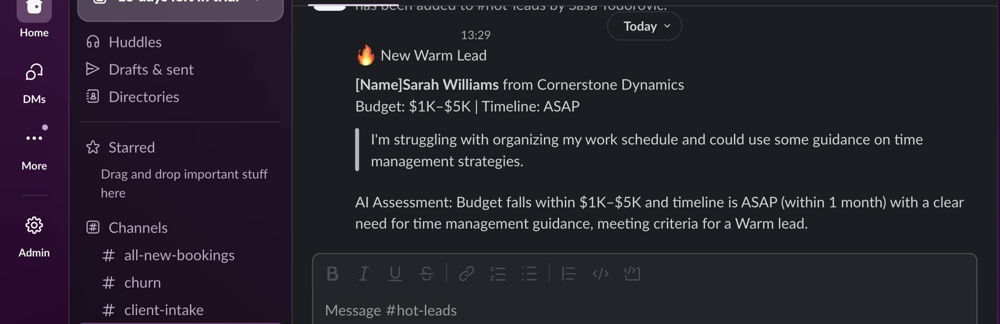
Slack notification — Warm lead with name, company, budget, timeline, request, and AI assessment 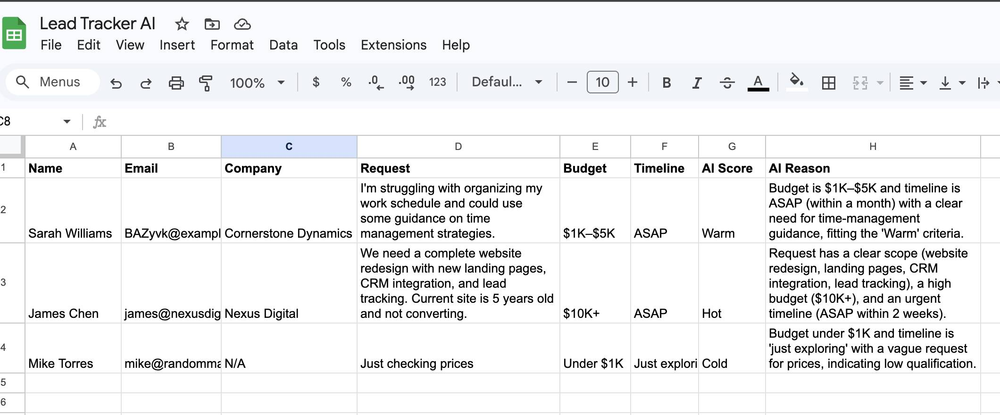
Google Sheet with three test leads — Warm, Hot, and Cold scores with AI-generated reasons in column H Get one tested automation tutorial per week — no fluff, no spam. Subscribe free →
The JSON Schema for Lead Qualification
In step 6, you pasted a JSON Schema into the OpenAI module's Output Format field. Here's the schema and what each part does:
{
"type": "object",
"properties": {
"score": {
"type": "string",
"enum": ["Hot", "Warm", "Cold"]
},
"reason": {
"type": "string"
}
},
"required": ["score", "reason"],
"additionalProperties": false
}This schema does three things. First, it forces the AI to return exactly two fields: score and reason. No extra keys, no missing data — additionalProperties: false locks the shape. Second, the enum on score restricts the value to exactly "Hot," "Warm," or "Cold." The AI cannot return "Medium" or "Very Hot" or any other creative variation. Third, because the output is a defined schema, Make.com automatically parses the response into separate mappable fields. You'll see "result: score" and "result: reason" in the mapping panel of every module that follows — no Parse JSON module needed.
The OpenAI Prompt — Why It's Written This Way
The prompt has two parts that work together: the Instructions (system message) and the Prompt (user message). Understanding why each part is structured the way it is helps you customize the scoring for your business.
The Instructions field tells the AI what role to play and how to format its response. Three design choices matter here. First, "respond with ONLY a JSON object" eliminates conversational fluff — the AI won't say "Sure! Here's my analysis:" before the actual data. Second, the scoring rules use specific, measurable criteria: dollar amounts, timeframes, and observable qualities like "clear project scope." Vague rules like "seems interested" would produce inconsistent results. Third, the rules are mutually exclusive — a lead can only match one category. If Hot requires "$5K+ AND urgent timeline" while Warm requires "$1K-$5K OR timeline within 1 month," there's no overlap that would confuse the model.
The Prompt field is the user message — the actual data being analyzed. Each field is labeled (Name:, Company:, Request:, Budget:, Timeline:) so the model knows what it's reading. The Email field is deliberately excluded because it adds no scoring value and unnecessarily sends personal data to the API.
Credits and Cost Breakdown
This automation runs on Make.com's free plan. Here's the exact cost per lead:
Make.com Credits per Lead
| Module | Credits | Notes |
|---|---|---|
| Typeform Watch Responses | 0 | INSTANT trigger — zero cost while idle |
| OpenAI Generate a Response | 1 | Fixed: 1 credit per call regardless of token count |
| Google Sheets Add a Row | 1 | Fixed: 1 credit per row |
| Slack Send a Message | 0 or 1 | 1 credit for Hot/Warm leads, 0 for Cold (filter blocks execution) |
| Total per lead | 2-3 | 2 for Cold leads, 3 for Hot/Warm leads |
At 100 leads per month with a 30/40/30 split of Hot/Warm/Cold, that's 70 leads × 3 credits + 30 leads × 2 credits = 270 credits per month. The free plan includes 1,000 credits — this automation uses about 27% of your monthly allowance, leaving room for other automations. If you outgrow the free plan's credit limit, the Core plan ($9/month) bumps you to 10,000 credits.
OpenAI API Cost per Lead
| Component | Tokens | Estimated Cost |
|---|---|---|
| System prompt (Instructions) | ~150 input tokens | < $0.001 |
| User prompt (lead data) | ~80-120 input tokens | < $0.001 |
| Response (JSON) | ~40-70 output tokens | < $0.001 |
| Total per lead | ~270-340 tokens | $0.001-0.003 |
At 500 leads per month, your OpenAI bill is approximately $0.50-1.50. The AI layer is usually negligible at small business volume.
What Could Go Wrong (and How to Handle It)
The most common issue is the OpenAI module returning an error about invalid API key or insufficient credits. Double-check your API key in the connection settings and verify you have credit on your OpenAI account at platform.openai.com/settings/organization/billing. Make.com's connection dialog links directly to the billing page for first-time users.
The second issue is inconsistent scoring for borderline leads. A lead with a $5K budget but "Just exploring" timeline could reasonably be Hot or Warm. If you notice the AI waffling on edge cases, tighten your scoring rules in the Instructions field. Add explicit tiebreakers: "When budget qualifies as Hot but timeline qualifies as Cold, score as Warm." The more specific your rules, the more consistent the output.
Third: the Slack message shows literal text instead of mapped values. This happens when you type field names manually instead of clicking the mapping token from the panel. In the Slack Text field, delete any hardcoded text like "[Name]" and replace it by clicking the corresponding Typeform mapping token (module 1 → Full Name). Every dynamic value should appear as a colored pill in the field, not as plain text.
Fourth: the filter doesn't pass any leads to Slack. Verify that the filter conditions reference "result: score" from the OpenAI module (module 2), not a Google Sheets field. The score value is case-sensitive — if your schema uses "Hot" (capitalized), your filter must match "Hot" exactly, not "hot" or "HOT."
Frequently Asked Questions
Can I use a different AI model instead of GPT-5-mini?
Yes. The Model dropdown in the OpenAI module lists all models available on your OpenAI account. GPT-5-mini is recommended for classification tasks because it's the most cost-efficient option with sufficient accuracy. Larger models like GPT-5 will produce similar results for this use case at higher cost. Avoid reasoning-optimized models (like the o-series) — they're designed for complex multi-step problems, not simple classifications.
Can I add more scoring categories like "Very Hot" or "Needs Review"?
Yes. Update the enum array in the JSON Schema to include your new values, then add corresponding rules in the Instructions field. For example, add "Very Hot" for leads with $10K+ budget AND ASAP timeline AND detailed scope. The filter on the Slack connection would need updating to match the new category names.
Does this work with forms other than Typeform?
Yes. Replace the Typeform trigger with any form tool that has a Make.com module — Google Forms, JotForm, Gravity Forms, or even a custom webhook. The rest of the scenario stays identical. The only change is which module provides the form field mappings in the OpenAI prompt and Google Sheets columns.
What happens if OpenAI is down or returns an error?
The scenario stops at the OpenAI module and Make.com logs the error. The lead data from Typeform is not lost — it stays in Typeform's response dashboard. You can replay failed executions from Make.com's scenario history once the issue is resolved. For production use, consider adding error handling (the wrench icon on the OpenAI module) to route failures to an email notification so you know immediately.
Can I score leads from multiple forms with one scenario?
Not directly — each Typeform Watch Responses module is linked to one specific form. If you have multiple intake forms, create separate scenarios for each, or use a Custom Webhook that receives data from multiple sources (similar to the multi-source lead tracking approach from our earlier tutorial).
What if the AI scores a lead wrong?
It will happen occasionally, especially for borderline leads with mixed signals (high budget but vague request, or low budget but urgent timeline). AI classification is consistent, not perfect. A quick weekly scan of your Google Sheet — sorting by AI Score and skimming the AI Reason column — catches any misclassifications. If you notice a pattern (for example, the AI consistently underscores leads from a specific industry), tighten the scoring rules in the Instructions field to account for it.